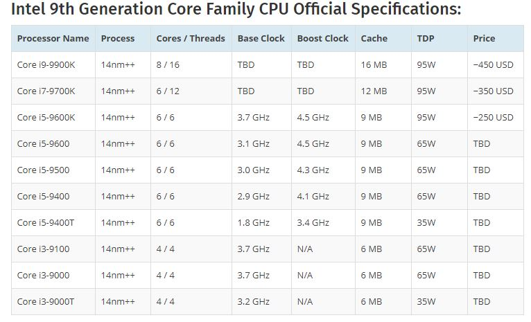

¿Qué es un Chip Set?
El chip set (o conjunto de chips) es una serie de circuitos integrados especializados que se encuentran en la placa base (motherboard) de una computadora. Su función principal es coordinar y controlar el flujo de datos entre el procesador, la memoria RAM, los dispositivos de almacenamiento y otros componentes periféricos.
Tipos principales de chip set
- Puente norte (Northbridge): Controla la comunicación entre el CPU, la memoria RAM y la tarjeta gráfica (GPU). Su proximidad al procesador lo hace fundamental para el rendimiento.
- Puente sur (Southbridge): Administra los dispositivos de entrada/salida (E/S), como puertos USB, discos duros, audio, red, etc.
Evolución del chip set
En arquitecturas modernas, las funciones del Northbridge han sido integradas directamente en el procesador, lo que ha simplificado las placas base. Hoy en día, el chip set se refiere principalmente al Southbridge, que gestiona las funciones de E/S y conectividad.
Relación con el ensamble de computadoras
Elegir el chip set adecuado es esencial para garantizar compatibilidad con el procesador, la memoria RAM y los dispositivos periféricos. Los fabricantes como Intel y AMD diseñan chip sets específicos para sus procesadores y sus familias (por ejemplo, Intel B660 o AMD B550).
